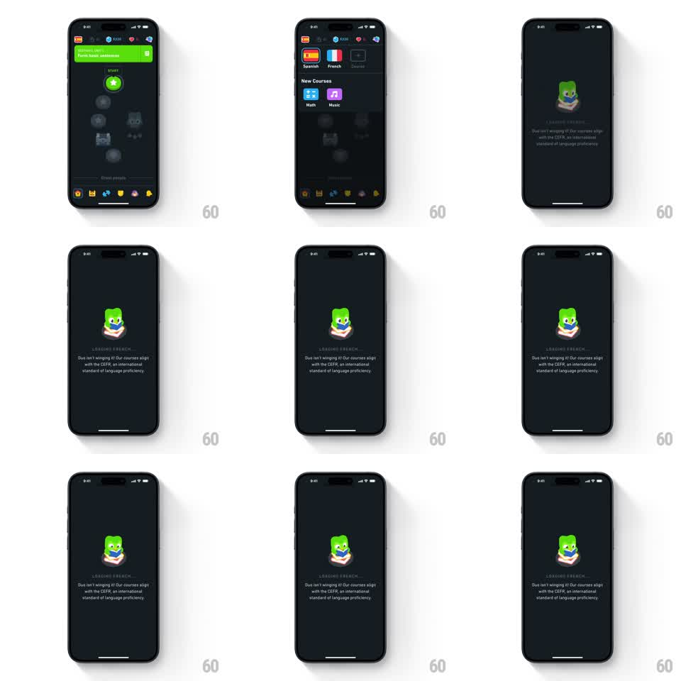

Media
Frame-by-frame

Rebuild this animation 1:1: Duolingo's language-course loading screen - after picking a language, a dark interstitial shows Duo reading a book, bobbing and blinking over a "LOADING FRENCH..." caption and CEFR explainer copy.

Rebuild this animation 1:1: Duolingo's language-course loading screen - after picking a language, a dark interstitial shows Duo reading a book, bobbing and blinking over a "LOADING FRENCH..." caption and CEFR explainer copy. ## Integration Integration: stack-agnostic spec - springs given as stiffness/damping, timed motions as duration + curve; map every value to your framework and animation library of choice. ## Scene Dark background (near-black navy). Entry point: course-select screen with language tiles. Loading screen: Duo center, holding an open book with a cream cover. Below: letterspaced gray caption "LOADING FRENCH...", then small copy: "Duo isn't winging it! Our courses align with the CEFR, an international standard of language proficiency." ## Motion spec Pattern: reading mascot loading loop. - Transition in: fade over the course screen (200ms); Duo scales 0.9 to 1.0 (250ms, ease-out). - Duo reads: the book tilts side to side (rotation +-4deg, 1.6s sine) and a page flips every ~2s (page rotation 0 to -160deg around the spine, 400ms, ease-in-out). - Duo bobs (translateY +-6px sine, 2s) and blinks every ~2.5s (lids closed 120ms). - The caption pulses (opacity 0.4 to 1.0, 1s sine loop). ## Calibration - Book motion and bob are offset in phase so the loop never looks mechanical. - Caption pulse is the only text animation; the explainer copy stays static. ## Reduced motion Static composition, full-opacity caption, no loops. ## Don't miss - The course name in the caption is interpolated (LOADING FRENCH..., LOADING SPANISH...) - build it as a template. - The dark palette is continuous with the course screen - no flash on entry.